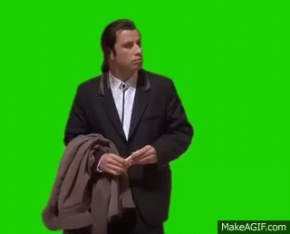

Lo que mas me gusto
Siendo totalmente sincero, lo que mas me gusto de los temas
tocados en clase fue la normalización de base de datos.
Apesar de que fue un dolor de cabeza por muchos momentos
se le toma gusto al proceso de realizar la normalización
y de igual manera, el proceso que se realiza para crear la
base de datos en Access, igual se disfrutan "Las horas nalgas"
para poder entender totalmente la normalización, despues de
tanto repetirlas, se me han quedado grabadas las normas para
realizar la normalización y que "Nunca debemos de asumir
debemos de preguntar"

Lo que menos me gusto
No tengo un tema el cual no me haya gustado, lo unico que
podría llegar a mencionar, son los pequeños momentos en los cuales
no comprendía el tema, esos momento eran complicados porque
necesitaba entender rapido pero no siempre se puede entender
a la primera, pero luego explicaba muy bien el tema nuevamente
y se disiparon mis dudas, tanto los temas de la conversión de los
numeros, el tema de la normalización, algoritmos, son temas
que personamente se me hacen muy interesantes y los tomo como un reto
ahora estoy revisando el tema de la IP, IPV4, IPV6 y etc, son temas
que siguen siendo interesantes y entretenidos de poder aprender

Me hubise gustado
Me hubiese gustado haber tenido un clase sobre "Telecomunicaciones"
ya que apesar de que nos brindo una presentación sobre el tema, es
mas sencillo el tema si lo hubiera explicado en clase, aunque, estoy
consiente de que no dio tiempo para mucho mas, ya que el tema de
algoritmos abarco mucho tiempo dentro de la agenda, aún que creo
estar listo para el examén